You said: responsible person adn 10 day (marketing) timeframe didn't pull through.
Jul 7
Use the up and down arrow keys to move between messages.
responsible person adn 10 day (marketing) timeframe didn't pull through.
Good catch on the timeframe — I found an actual bug. Let's check the Responsible Person code too before concluding it's just deployment lag.
Found it — the merged Task Tracker view (the main "TASKS" tab) doesn't carry responsiblePerson through at all, so if that's where you were checking, it would genuinely never show up there even though it's saved correctly. Let's fix that:
Now let's show it on the merged task card:
Now let's validate everything and finalize:
I found two real bugs — not deployment issues this time:
10 days (Marketing) was hidden by design, not broken. I'd carried over a marketingOnly flag from an earlier version of this option, which meant it only appeared in the dropdown when Department was set to "Marketing." Since you listed it as one of the 5 standard options with no such condition, I removed that gate — it now always shows regardless of department.
Responsible Person was saving correctly, but invisible on the main Task Tracker. It shows up fine in the "+ Add Task" page's own table (I added a "Responsible" column there), but the merged Task Tracker view (the main "TASKS" tab where Add Task submissions also appear) never had that field wired through at all — so if that's where you were looking, it would genuinely never show up even though the data was being saved. Fixed: it now appears in that card's meta line too (e.g. "Reported by X · by X · Logged ... · Responsible: Y").
server.js is unchanged this time — just push index.html:
Copy-Item "$env:USERPROFILE\Downloads\index.html" "$env:USERPROFILE\Downloads\BOS-Dashboard\public\index.html" -Force
cd "$env:USERPROFILE\Downloads\BOS-Dashboard"
git add .
git commit -m "Fix: 10 days (Marketing) always visible, Responsible Person shown on Task Tracker"
git pushAfter it deploys, check both the + Add Task page (dropdown should show 10 days regardless of department) and the TASKS tab (any Add Task card should show the Responsible name in its meta line).
Submission page doesn't reset after submission. Fix and add to index html
Good thing I double-checked — I left a stray orphaned catch block from the old code that would have broken the entire script. Let me fix that:
Now let's syntax-check thoroughly before shipping:
Fixed and verified. Here's what happened and what changed:
What I found: While making the reset more robust, I initially introduced a leftover orphaned catch block that would have caused a JavaScript syntax error across the entire page — meaning nothing on the page would work at all if I'd shipped it. I caught this in validation before sending it to you, so it never reached you, but wanted to flag it since it shows why I always syntax-check before delivering.
What actually changed in this fix:
resetOpsTaskForm() function, with null-checks on every field so a missing/renamed element can never silently break the whole resetI validated the final file with a full JS parse (not just eyeballing it) — confirmed clean.
Push it the same way as before:
Copy-Item "$env:USERPROFILE\Downloads\index.html" "$env:USERPROFILE\Downloads\BOS-Dashboard\public\index.html" -Force
cd "$env:USERPROFILE\Downloads\BOS-Dashboard"
git add .
git commit -m "Fix Add Task form reset to be robust and decoupled from submission errors"
git pushAfter it deploys, submit a test task and confirm every field (department, café, reported by, responsible person, timeframe, comments, photo) goes back to blank/default. If it still doesn't reset after this, please open the browser console (F12 → Console tab) when you submit — if resetOpsTaskForm hits an error, it'll now print exactly what broke instead of failing silently, and that'll tell us precisely what to fix next.
Responsible persons and reported by names to be the same. Change the wording for the section displayed in the attached to: Department escalation timeframe : 24hrs / 48hrs / 72hrs / 7 days / 10 days (Marketing). Send update html
Now let's create a unified people list and use it for both dropdowns:
Now let's update both dropdowns to use this unified list:
Now let's confirm the timeframe wording matches exactly what's requested:
This already matches exactly: 24 hrs / 48 hrs / 72 hrs / 7 days / 10 days (Marketing) — plus the separate Manual Entry option, which is a distinct feature you asked for earlier, not part of this list. Let's validate and ship:
That's the clean, deduplicated list both dropdowns will now share (15 names, no duplicates for Tshepo Goqo or Raabia Isaacs who appear both as FSMs and support team). Let's finalize:
Both done:
Reported By and Responsible Person now share the same name list — one unified roster of 15 people (all FSMs, Franlo Geldenhuys, Tarryn Palmer, and the support team, deduplicated where someone appears in both groups like Tshepo Goqo and Raabia Isaacs) used identically in both dropdowns.
Department Escalation Timeframe — confirmed it already reads exactly: 24 hrs / 48 hrs / 72 hrs / 7 days / 10 days (Marketing), with no separate 15-day or 19-day options lurking anywhere in the live code. (Note: the screenshot you sent describing "19 days... Marketing also gets 10-day and 15-day options" looks like it's from outdated documentation somewhere, not the current app — the live dropdown has been on the correct 5-option list since two updates ago.)
Push it the usual way:
Copy-Item "$env:USERPROFILE\Downloads\index.html" "$env:USERPROFILE\Downloads\BOS-Dashboard\public\index.html" -Force
cd "$env:USERPROFILE\Downloads\BOS-Dashboard"
git add .
git commit -m "Unify Reported By and Responsible Person name lists"
git pushThat push succeeded, but it pushed the wrong content — look closely at the sequence:
Copy-Item command failed ("Cannot find path... it does not exist") — meaning index.html was never actually copied into your BOS-Dashboard\public folder.git add, git commit, and git push all ran anyway, on whatever was already sitting in that folder — which is the previous version, not the one with the unified dropdowns.So the unified Reported By / Responsible Person change is not live yet. Here's how to fix it properly:
1. Re-download the file first
Scroll back up to my last message with index.html and click to download it. Then confirm it actually landed in Downloads:
Get-ChildItem "$env:USERPROFILE\Downloads\index.html"This should show file details (name, size, last-modified time close to now). If it errors with "cannot find path," check your browser's download bar/settings — it may be saving to a different folder than Downloads.
2. Once confirmed, copy it in
Copy-Item "$env:USERPROFILE\Downloads\index.html" "$env:USERPROFILE\Downloads\BOS-Dashboard\public\index.html" -Force3. Verify git actually sees a meaningful change this time
cd "$env:USERPROFILE\Downloads\BOS-Dashboard"
git diff --statThis should show noticeably more than "5 insertions, 4 deletions" for public/index.html — expect something closer to 15-25 changed lines given this update touches the people-list definition and both dropdowns.
4. Then commit and push
git add .
git commit -m "Unify Reported By and Responsible Person name lists"
git pushRun step 1 first and tell me what Get-ChildItem shows — let's make sure the file is actually there before repeating the rest.
The same error occurs. failed to find path
Let's skip the Downloads-folder step entirely — that's clearly where the friction is happening. Save the file directly into the right folder:
1. Find the download link/button for index.html in my earlier message (scroll up to where I shared it).
2. Right-click it and choose "Save Link As..." (Chrome/Edge) instead of just left-clicking.
3. In the Save dialog that pops up, navigate directly to:
C:\Users\Franlo\Downloads\BOS-Dashboard\public4. Save it with the exact filename index.html, and confirm "Yes" if it asks to overwrite the existing file.
This skips the whole "download to Downloads, then Copy-Item" dance — the file lands exactly where it needs to be in one step.
5. Then just verify and push:
cd "$env:USERPROFILE\Downloads\BOS-Dashboard"
git diff --statConfirm public/index.html shows a meaningful number of changed lines (more than single digits). Then:
git add .
git commit -m "Unify Reported By and Responsible Person name lists"
git pushIf that still doesn't work or you can't find a "Save Link As" option — it's worth checking where your browser is actually putting downloads, since `env:USERPROFILE\Downloads‘mightnotbeit(thishappensonworkPCswhereOneDriveredirectsDownloadselsewhere).Openyourbrowser′sdownloadhistory(∗∗Ctrl+J∗∗inChrome/Edge)andlookatthefullpathshownunderthefile—copythatexactpathanduseitinplaceof‘env:USERPROFILE\Downloads` in the commands above.
Let me know which of these gets you unstuck.

